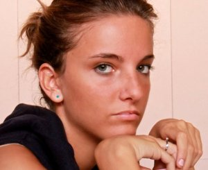

Racconti Sottotitolo
Rossana Salaro

Mi chiamo Rossana, ho 20 anni e attualmente frequento il secondo anno di Informatica presso l'università Ca' Foscari di Venezia.
Ho scelto informatica principalmente per specializzarmi nella parte web e di gestione dei dati e per continuare il percorso che avevo iniziato alle superiori; infatti provengo da un istituto tecnico dove mi sono diplomata in Informatica. Fin dalle scuole medie sono sempre stata convinta che l'informatica fosse ciò che avrei voluto fare da "grande" e infatti non mi sono smentita. Con il passaggio alle superiori ho imparato a conoscere molti degli aspetti dell'informatica che tuttora sto approfondendo grazie al percorso universitario.
Per quanto riguarda la distinzione tra i sessi nel campo dell'informatica non penso che al giorno d'oggi si possa pensare ancora a una differenza tra uomini e donne. Credo infatti che le donne interessate ad avvicinarsi all'informatica stiano crescendo sempre di più, soprattutto per il fatto che oramai l'informatica e la tecnologia in generale ci circondano in tutti gli aspetti della nostra vita quotidiana. In conclusione l'informatica non si addice in particolare a nessuno dei due generi ed è indifferente se a scrivre un programma è una donna piuttosto che un uomo, in fondo il risultato finale sarà comunque buono o cattivo in base alla preparazione e all'esperienza del soggetto.
Valentina Pizzo
Ciao! Sono Valentina, ho 22 anni e attualmente sono iscritta al corso di laurea triennale in Informatica all’università La Sapienza di Roma.
Con un diploma di maturità preso ad un liceo classico linguistico, dove la matematica (e tantomeno l’informatica) non è certo materia d’indirizzo, ho deciso comunque di intraprendere questo percorso. Avevo voglia di mettermi alla prova, di entrare in questo mondo che mi era totalmente sconosciuto ma che mi incuriosiva molto, pur sapendo che la strada non sarebbe stata affatto facile. Le difficoltà, soprattutto il primo anno, sono state molte! In particolare perché di programmazione non sapevo assolutamente nulla. Ma con un po’ di testardaggine e vivendo in un ambiente positivo grazie alle amicizie strette in aula, tutto è stato possibile!
Lo studio viene sempre premiato e gli obiettivi raggiunti danno una grande soddisfazione che ti spinge a fare sempre meglio.
Al tempo della mia scelta l’informatica non era una passione, ma solo una curiosità..Dico questo per non farvi scoraggiare dalle persone che affermano continuamente che se non si ha passione per una cosa, allora non si è in grado di farla bene. Beh, non è affatto vero! Chi è mosso dalla passione avrà un lavoro più facile, ma questa è in grado di nascere pian piano durante il percorso di studio, e l’informatica è una materia a cui difficilmente non ci si appassiona.
Ora che sono quasi alla fine del mio percorso triennale, non mi pento affatto della scelta che ho fatto; è un percorso difficile, che molte volte ti farà mettere in dubbio tutto quanto, ma che consiglierei a tutte quelle persone che hanno curiosità di comprendere le cose che ci circondano e che usiamo quotidianamente, le stesse cose che grazie all’informatica continueranno ad evolvere e quindi a soddisfare il nostro bisogno di conoscenza del mondo tecnologico.
Elena Stazi
Sono Elena, ho 24 anni e sono iscritta al secondo anno della laurea magistrale in informatica all'Università degli Studi di Roma "La Sapienza".
Amavo la matematica e ho pensato di coniugarla con la tecnologia così la scelta di Informatica.
Nel corso di questi quattro anni, ho avuto la conferma di aver fatto la scelta giusta sia perchè ho avuto modo di studiare materie interessanti sia per le prospettive che tale facoltà mi offre nel mondo del lavoro.
Daltraparte nell'attuale mondo digitale, l'informatica gioca un ruolo centrale ed è riduttivo pensare che sia appannaggio dei soli uomini!
Martina de Zan

Ciao! Sono Martina, ho 20 anni, abito a Belluno e frequento il corso di laurea triennale di informatica a Ca' Foscari, Venezia.
Quando ho scelto questo percorso di studi non sapevo bene in cosa consistesse: avendo frequentato un liceo linguistico, la mia conoscneza della tecnologia era relegata al solo interesse personale e quindi molto ristretta, ma i computer mi affascinavano moltissimo, per cui mi sono detta "perché no?"
Proseguendo nei miei studi, non ho mai avuto modo di pentirmi della mia scelta, questo perché più cose imparavo, più ne volevo conoscere e più ne conoscevo, più cambiava il mio modo di pensare. Studiare informatica è molto più che imparare linguaggi di programmazione. Studiare informatica significa capire davvero come sono i computer e imparare a conoscerli, rendendosi conto che le loro possibilità sono pressoché infinite. Per questo consiglio il corso di studi di informatica a tutte le ragazze che hanno voglia di studiare e di mettersi in gioco, olte che una grande fantasia...e anche molta pazienza (questa è caldamente consigliata per lo studio della matematica!)
Laura de Carlo
Mi chiamo Laura, sono Leccese e tra poco compio 26 anni. Dopo aver completato la mia Laurea Triennale in Informatica a Bari, sto terminando i miei studi con la Laurea Magistrale qui a Roma.
Amo la letteratura e l'arte, in generale le scienze umanistiche, pertanto a volte mi chiedo se il cammino che ho scelto sia giusto o meno, se sia quello che fa per me, e, alla fine, mi rispondo di sì! Una donna può avere più passioni ed essere comunque determinata a coltivarne una in particolare. Perché' mi piace l'Informatica? Di sicuro perché è ciò che ci circonda, perché in questo secolo non potremmo farne a meno, perché ci rende la vita più facile e la ottimizza, perché ci aiuta ad aprire la mente ed a pensare in maniera diversa.
Sono qui per testimoniare che la tecnologia non coinvolge sempre e soltanto gli uomini, come i luoghi comuni ci fanno credere, bensì oggi il mondo informatico stimola ed incontra la passione per l'informatica anche in una donna. Informatica non significa soltanto scrivere del "codice", essa è ovunque e significa passione, creatività, intuizione, interazione nel sociale; ma soprattutto ci aiuta ad avere una visione del mondo lungimirante per rivoluzionare il modus pensandi abituale della gente. Cosa vorrei fare da "grande"? Lavorare nel mondo delle reti e della grafica per sfruttare il mio lato creativo ed interattivo. In bocca al lupo ragazze!
Sara de Cristofano
Ciao, sono Sara e sono iscritta al corso di laurea magistrale in Informatica alla Sapienza. Ho scelto informatica perchè è la materia in cui mi sono diplomata, e negli anni è diventata sempre più una passione.
Non ho avuto grosse difficoltà nel corso dei miei studi, nonostante l'ambiente prettamente maschile e gli argomenti di studio tutt'altro che banali. Ci vuole una buona dose di pazienza e determinazione per superare gli ostacoli accademici e burocratici, ma alla fine se ne esce con grande soddisfazione.
Consiglio alle ragazze di non escludere a priori questo campo a causa della matematica, o del fatto che sia poco femminile o troppo complesso. L'informatica fornisce diversi sbocchi professionali, in molti dei quali è necessaria una buona dose di creatività e capacità di risolvere problemi, abilità che a noi donne di certo non mancano, anzi...
Damiana Salvalai

Sono Damiana, ho 22 anni, sono di Brescia e sono al terzo anno del corso di laurea triennale di informatica a Ca' Foscari.
Finite le superiori ero indecisa su quale percorso di studi scegliere. Avendo fatto il liceo artistico le mie basi di matematica non era di certo le migliori per scegliere questo percorso, inoltre non avevo fatto niente di programmazione durante l'arco delle superiori e non mi sentivo sicura nell'intraprendere questo percorso. Nonostante questo mi sono buttata, scegliendo informatica.
Durante i miei studi, non mi sono mai pentita della mia scelta. Consiglio a tutte le donne che vogliono iniziare questo percorso di buttarsi, con l'impegno si può raggiungere qualsiasi traguardo.
Emanuela Fionchetti

Mi presento sono Emanuela Fionchetti sono nata a Roma il 26/08/1989 e sono una studentessa iscritta al corso di laurea magistrale di informatica presso l' Università di Roma "La Sapienza".
Studio informatica in quanto penso che l'ITC è un settore sempre in continua evoluzione che offre interessanti prospettive occupazionali. Gli studi sono molto interessanti e ogni giorno arricchiscono il mio bagaglio culturale.
Quella che sara' la mia professione futura una volta completati i miei studi è una professione multiforme, in grado di coprire una vasta gamma di mansioni e affrontare con successo molte sfide. Proprio per questo consiglio a tante ragazze appassionate della tecnologia e non solo di avvicinarsi sempre di più a questo campo e cercare di abbattere questo falso mito che l' informatica e' per maschi.
Margherita Rossi
Ciao sono Margherita, ho 22 anni e abito a Venezia.
Studio informatica, frequento la triennale. Ho scelto di seguire questa strada per interrompere la catena di umanisti che lega tutta la mia famiglia. Perché ho scelto proprio informatica? È una materia affascinante, ti fa capire quanto lavoro c’è dietro le azioni che noi riteniamo semplici quando ci mettiamo al computer: presenta delle difficoltà, ma dà tante soddisfazioni; non c’è nulla di meglio di vedere le proprie idee realizzate e funzionanti.
Ho trovato degli ostacoli, certo, ma al momento sono contenta della mia scelta e la consiglierei a tutte le ragazze curiose e che hanno voglia di mettersi in gioco: l’informatica richiede praticità, forza di volontà, elasticità e grinta, tutte doti che caratterizzano il genere femminile nella sua totalità.
Marta Usai

Sono Marta ho 23 anni, attualmente sono iscritta al secondo anno di Laurea Magistrale all'Università La Sapienza nel corso di Informatica. Precedentemente ho conseguito il diploma di maturità scientifica e la Laurea triennale all'Università di Cagliari.
La mia passione per le materie scientifiche, in particolare la matematica, mi ha portato a stringere il cerchio sulle facoltà da prendere in considerazione fino a trovarmi davanti a un bivio: matematica o informatica?
La mia scelta alla fine è stata Informatica, poichè guardando al futuro vedevo nell'Informatica la nuova scienza che avrebbe cambiato il mondo. Oggi giorno l'informatica, se ci pensiamo un attimo, risulta effettivamente presente in ogni momento della nostra vita e assistiamo continuamente a nuove evoluzioni e aggiornamenti. In questo campo non si finisce mai di imparare, ci sono sempre tante cose nuove da scoprire e da provare, ma anche da creare.
Dopo la laurea triennale avevo voglia di mettermi in gioco e vivere una nuova esperienza...mi sono guardata intorno e ho scelto una nuova Università per proseguire i miei studi: La Sapienza di Roma. La mia carriera universitaria, sia nel corso triennale che in quello magistrale, è stata positiva pur non avendo mai scritto nessuna riga di codice! Credo che alla fine con tanto impegno, ma soprattutto passione e curiosità per ciò che si studia, si possano realizzare grandi cose! Molti corsi inseriti all'interno dei piani di studio risultano teorici, probabilmente sarebbe utile inserirne qualcuno più pratico, ma complessivamente sono soddisfatta.
Creare il primo programma, il primo gioco, il primo sito, la prima app e vederla utilizzata da altre persone dà davvero una grande carica per andare avanti! Potessi tornare indietro sicuramente non cambierei idea.....sono felice di aver seguito la mia passione!
Sabrina Atzori
Mi chiamo Sabrina, ho 23 anni e frequento attualmente il corso di Laurea Magistrale di Informatica all'Università di Cagliari.
Qualche anno fa non scelsi di frequentare questo corso ragionando effettivamente su cosa mi interessava studiare o fare in un futuro. Fu curiosità e voglia di mettersi alla prova cimentandosi in qualcosa di cui non sapessi praticamente nulla!
La sorpresa è stata duplice: essere riuscita nell’impresa di comprendere una scienza non banale quale l’informatica e aver incrementato l’autostima e l’interesse a tal punto da portarmi ad andare avanti per questa strada.
Non ho mai dubitato delle scelte che ho fatto e che sto facendo; conoscendo molte altre ragazze iscritte al corso, in gamba e intraprendenti, sentendo le loro idee che parzialmente coincidono con le mie, consiglierei a chiunque di affrontare questo percorso. D'altronde non è una laurea per soli uomini, anzi, ritengo che possa appassionare allo stesso modo, se non talvolta anche di più, molte donne.
Antonella Marino

Sono Antonella ho 25 anni e sono iscritta al secondo anno della laurea magistrale in informatica all'Università degli Studi di Roma "La Sapienza", oltre allo studio ho l'opportunità di fare i miei primi passi lavorativi in un centro di ricerca, lavoro che mi ha dato diverse soddisfazioni come mettere in pratica ciò che ho studiato e che sto studiando e scrivere due articoli scientifici per delle conferenze.
Ho scelto informatica all'università perché si tratta di un settore in crescita a pari con le opportunità professionali. Offre una vasta gamma di scelte lavorative,permettendo di discernere tra tutte le innumerevoli presenti.
Le tecnologie dell'informazione sono diventate uno strumento importante nella vita quotidiana e personalmente gli aspetti per me più affascinanti sono la sicurezza informatica e la ricerca scientifica in generale, ambito in cui c'è molto spazio a livello professionale.
Debora Ciano

Mi chiamo Debora Ciano...sono di Gaeta, ho 26 anni e attualmente sono iscritta al secondo anno della laurea magistrale in Informatica all’Università degli Studi di Roma “ La Sapienza”.
Perchè ho scelto proprio Informatica? Personalmente ho deciso di intraprendere questa strada durante gli anni delle superiori quando ho avuto il mio primo computer, successivamente nei primi anni universitari mi sono trovata davanti ad un mondo che mi piaceva ma che allo stesso tempo mi ha dato nuove sfide da affrontare come per esempio la programmazione, che fino ad allora non sapevo cosa fosse. Nonostante questo sono sempre stata convinta della mia scelta perchè considero l’informatica la scienza del futuro e infatti tutt’oggi rappresenta uno dei campi più diffusi e presenti nella vita di tutti i giorni.
Non è roba per donne? Assolutamente non è cosi….spesso viene attribuita solo all’universo maschile ma credo proprio che nel ventunesimo secolo questa barriera sia superata e lo dimostra la presenza in forte crescita di donne in quasi tutti i ruoli professionali. Ad ogni modo penso che la passione e la tendenza per un particolare percorso di vita non credo abbia disparità tra i sessi ma che invece vadano coltivate quindi non posso che augurarvi di fare la scelta giusta!!
Marianna Proganò
Ciao sono Marianna, ho 22 anni e abito a Latina. Attualmente frequento il corso di laurea triennale di informatica.
Ho scelto questa facoltà perchè la tecnologia mi affascina e la mia passione è scoprire cosa c'è "dietro" ad un computer ( o comunque un dispositivo informatico). Se l'informatica rappresenta il futuro, perchè rimanere indietro?
Globalmente sono soddisfatta del mio corso di studi, certo ci sono piccole problematiche (nessuno è perfetto), ma se tornassi indietro sicuramente lo risceglierei. Diciamo che lo consiglio a ragazze a cui come me piace molto l'informatica, ma anche la matematica perchè non è un corso di studi semplice. Ci vuole molta passione, voglia di studiare e un po' di fantasia.